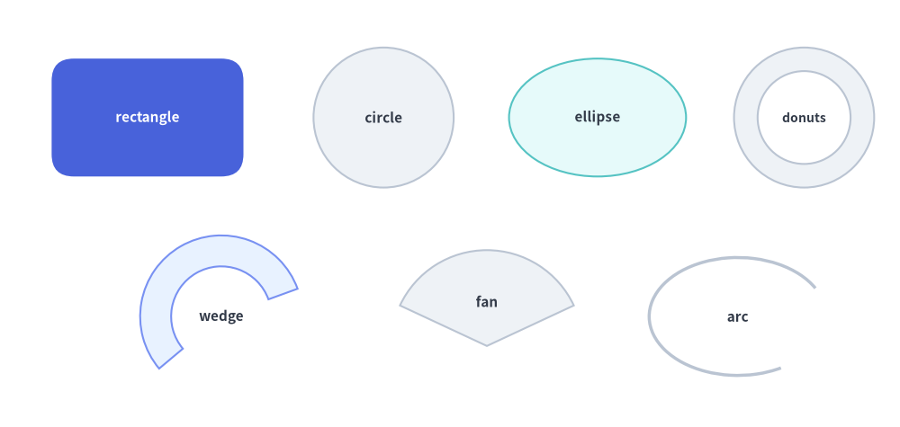
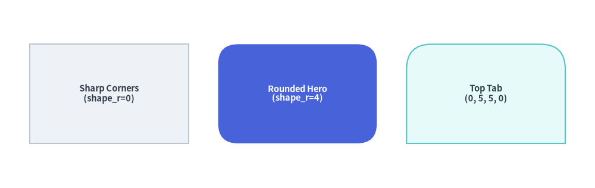
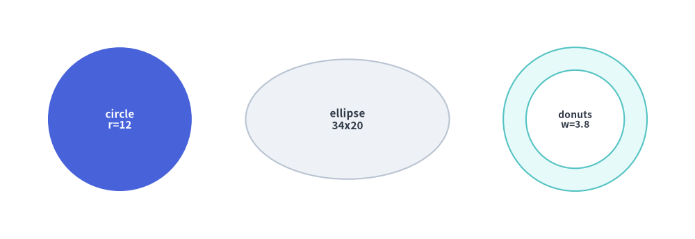
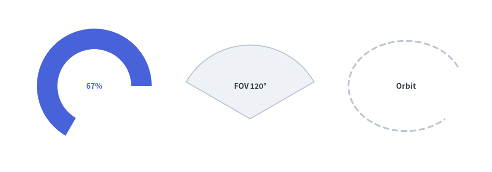

Basic & Radial Shapes
The drawlib.shapes module provides declarative geometric primitives with built-in center text labels, corner rounding, and unified styling. This page covers basic rectangular cards (rectangle) and radial/circular geometries (circle, ellipse, donuts, wedge, fan, arc).
1. Overview of Basic & Radial Shapes

Source Code
from drawlib.canvas import save, setup
from drawlib.shapes import arc, circle, donuts, ellipse, fan, rectangle, wedge
from drawlib.styles import Styles
setup(width=122, height=58)
lbl_dark = Styles.DarkBold.patch(text_size=11.0)
lbl_white = Styles.WhiteBold.patch(text_size=11.0)
# Row 1: Rectangle, Circle, Ellipse, Donuts
rectangle(
(20, 42),
width=26,
height=16,
style=Styles.PrimaryFlat.patch(shape_r=3),
text="rectangle",
text_style=lbl_white,
)
circle((52, 42), radius=9.5, style=Styles.Neutral, text="circle", text_style=lbl_dark)
ellipse((81, 42), width=24, height=16, style=Styles.SecondaryNeutral, text="ellipse", text_style=lbl_dark)
donuts((109, 42), radius=9.5, width=3.2, style=Styles.Neutral, text="donuts", text_style=Styles.DarkBold.patch(text_size=10.0))
# Row 2: Wedge, Fan, Arc
wedge(
(30, 15),
radius=11,
width=4.2,
angle_start=20,
angle_end=220,
style=Styles.PrimaryNeutral,
text="wedge",
text_style=lbl_dark,
)
fan(
(66, 11),
radius=13,
angle_start=25,
angle_end=155,
style=Styles.Neutral,
text="fan",
text_style=lbl_dark.patch(xy_shift=(0, 6)),
)
arc(
(100, 15),
width=24,
height=16,
angle_start=20,
angle_end=310,
style=Styles.DarkBold,
text="arc",
text_style=lbl_dark,
)
save()
2. Parameter & Style Signature Reference
All basic and radial shape functions share a consistent parameter and styling contract:
| Parameter / Style Field | Type | Default | Description |
|---|---|---|---|
xy |
tuple[float, float] |
Required | Anchor coordinate (x, y) (geometric center when using preset Styles.*). |
width / height |
float |
Required | Horizontal and vertical dimensions (> 0) for rectangle, ellipse, and arc. |
radius |
float |
Required | Outer radius (> 0) for circle, donuts, wedge, and fan. |
style |
Style |
Required | Visual style defining fill (shape_fill_color), border (shape_line_color, shape_line_width, shape_line_style), and geometry modifiers. |
style.shape_r |
float | tuple[float, ...] |
None |
Corner rounding radius for rectangle (scalar float or 4-tuple (bl, tl, tr, br)). |
style.angle |
float |
0.0 |
Counterclockwise rotation angle in degrees around the shape center. |
style.halign / valign |
str |
"center" |
Coordinate anchor alignment ("left"/"center"/"right", "bottom"/"center"/"top"). |
text |
str |
"" |
Embedded label rendered at the geometric center of the shape. |
text_style |
Style | None |
None |
Typography style override (text_color, text_size, text_font). |
text_style.xy_shift |
tuple[float, float] |
(0.0, 0.0) |
Relative (dx, dy) offset for the embedded text label (rotates with the shape). |
text_style.angle |
float | None |
None |
Independent text rotation angle in degrees (overrides shape style.angle). |
3. Rectangles & Rounded Corners (rectangle)
rectangle(xy, width, height, *, style, text="", text_style=None) draws a rectangular card centered at xy.
- Uniform Rounded Corners: Patch
shape_rwith a scalar float (e.g.Styles.Neutral.patch(shape_r=4)). - Per-Corner Rounding: Pass a 4-tuple
(bottom_left, top_left, top_right, bottom_right)to round specific corners (ideal for tabs, headers, and split cards). - Rotation & Text Offset: Patch
angleonstyleto rotate the card, andxy_shiftorangleontext_styleto fine-tune the label.
from drawlib.canvas import save, setup
from drawlib.shapes import rectangle
from drawlib.styles import Styles
setup(width=120, height=38)
# 1. Sharp-cornered neutral card
rectangle(
(22, 19),
width=32,
height=20,
style=Styles.Neutral,
text="Sharp Corners\n(shape_r=0)",
text_style=Styles.DarkBold.patch(text_size=10.5),
)
# 2. Uniform rounded hero card
rectangle(
(60, 19),
width=32,
height=20,
style=Styles.PrimaryFlat.patch(shape_r=4),
text="Rounded Hero\n(shape_r=4)",
text_style=Styles.WhiteBold.patch(text_size=10.5),
)
# 3. Per-corner rounded tab (top-left and top-right rounded)
rectangle(
(98, 19),
width=32,
height=20,
style=Styles.SecondaryNeutral.patch(shape_r=(0, 5, 5, 0)),
text="Top Tab\n(0, 5, 5, 0)",
text_style=Styles.DarkBold.patch(text_size=10.5),
)
save()

4. Circles, Ellipses & Donuts (circle, ellipse, donuts)
circle(xy, radius, *, style, text="", text_style=None): Standard circle centered atxywith diameter2 * radius.ellipse(xy, width, height, *, style, text="", text_style=None): Oval bounded by horizontalwidthand verticalheight(supports rotation viastyle.patch(angle=...)).donuts(xy, radius, *, style, width=None, text="", text_style=None): Concentric ring with outerradiusand ring wall thicknesswidth(so the hollow inner radius equalsradius - width).
from drawlib.canvas import save, setup
from drawlib.shapes import circle, donuts, ellipse
from drawlib.styles import Styles
setup(width=116, height=40)
# 1. Solid focal circle
circle(
(20, 20),
radius=12,
style=Styles.PrimaryFlat,
text="circle\nr=12",
text_style=Styles.WhiteBold.patch(text_size=11.0),
)
# 2. Axis-aligned ellipse
ellipse(
(58, 20),
width=34,
height=20,
style=Styles.Neutral,
text="ellipse\n34x20",
text_style=Styles.DarkBold.patch(text_size=11.0),
)
# 3. Annular donut ring (inner radius = 12 - 3.8 = 8.2)
donuts(
(96, 20),
radius=12,
width=3.8,
style=Styles.SecondaryNeutral,
text="donuts\nw=3.8",
text_style=Styles.DarkBold.patch(text_size=10.0),
)
save()

5. Angular Sectors, Wedges & Arcs (wedge, fan, arc)
All angular primitives measure angle_start and angle_end in degrees counterclockwise (CCW) from the positive X-axis ($0^\circ$ = right, $90^\circ$ = top, $180^\circ$ = left, $270^\circ$ = bottom):
wedge(xy, radius, *, style, width=None, angle_start=0, angle_end=360, text="", text_style=None): Draws an angular ring slice whenwidth(wall thickness) is specified, or a solid pie sector whenwidth=None.fan(xy, radius, *, style, angle_start=0, angle_end=180, text="", text_style=None): Draws a filled pie sector connecting the center apexxyto the outer circular arc fromangle_starttoangle_end.arc(xy, width, height, *, style, angle_start=0.0, angle_end=360.0, text="", text_style=None): Draws an open, unfilled elliptical stroke along the perimeter betweenangle_starttoangle_end.
from drawlib.canvas import save, setup
from drawlib.shapes import arc, fan, wedge
from drawlib.styles import Styles
setup(width=120, height=42)
# 1. Angular donut slice (wedge with wall thickness width=5)
wedge(
(23, 21),
radius=14,
width=5,
angle_start=0,
angle_end=240,
style=Styles.PrimaryFlat,
text="67%",
text_style=Styles.PrimaryBold.patch(text_size=11.0),
)
# 2. Circular pie sector (fan from 30° to 150°)
fan(
(61, 13),
radius=18,
angle_start=30,
angle_end=150,
style=Styles.Neutral,
text="FOV 120°",
text_style=Styles.DarkBold.patch(text_size=11.0, xy_shift=(0, 8)),
)
# 3. Open elliptical stroke (arc from 20° to 320°)
arc(
(99, 21),
width=28,
height=22,
angle_start=20,
angle_end=320,
style=Styles.DarkBold.patch(shape_line_style="dashed"),
text="Orbit",
text_style=Styles.DarkBold.patch(text_size=11.0),
)
save()

[!TIP]
- To draw curved arc connectors with terminal arrowheads (
arrow_head="->"), useline_arc()orline_curved()in Lines & Connectors, or 2D blockarrow_arc()in Block Arrows.- For multi-sided polygons and custom Bézier paths, see Polygons & Custom Paths.
- For 3D database cylinders, actor faces, and speech callouts, see Cylinders, Faces & Callouts.